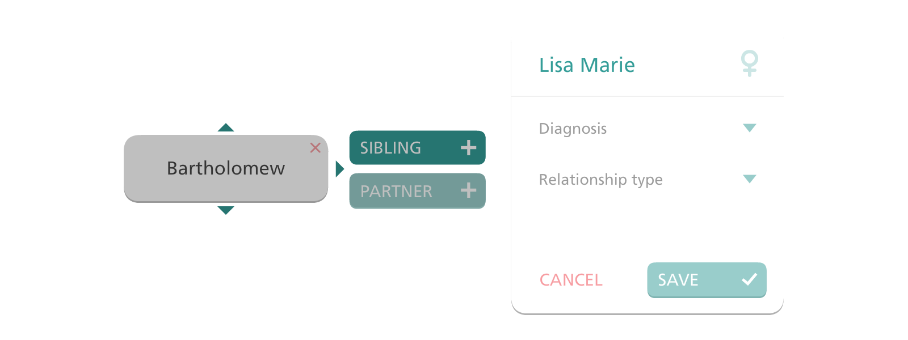

Back in Philadelphia, in the fall of 2009, I started working as a software developer for a biopharmaceutical company, small for its industry and headquartered a few miles up the river from the city where, in the previous winter, I’d completed the following degree:
Bachelor of Science in Information Systems with a specialization in Human–Computer Interaction
And so for the next four years I would be part of an eight-person applications team operating as a sort of in-house digital product agency: pitching, designing, building and refining a fast-growing portfolio of interactive tools and resources, created primarily to help people afflicted by rare, life-altering genetic disorders.
A genealogy tool for the web, written in ActionScript and C#. Solo project.
After some time spent hacking on email outreach campaigns and promotional web stuff – rites of passage, in a sense, mired in processes I set out to modernize with style guides and frameworks and automation tools – my first notable project was to design and build a specialized genealogy application.
We knew our customers spent a lot of time thinking about heredity, and we knew understanding could be hard to find in static charts and graphs. So we wanted to provide a better tool, something more personal and easier to grasp: a persistent but fluid model of real-life family structure, accounting for the incidence of disease and showing how it might be passed down to new generations. Above all, we wanted to provide clarity.
Teaching the computer these things was easy enough; computers speak the language of charts and graphs, if formatted a certain way. Conveying that understanding back to humans would prove more difficult, but each iteration of the design brought us a step closer, and ultimately we seemed to get it right. By the time I left, it would be translated into five languages and used by patients and caregivers around the world for three years and counting.
One of several dosage calculators. Concept, UI, visuals, and prototyping.

With independent work so far well-received, and with some benefit from a well-timed evolution in our methodology, I soon found myself becoming something like a design lead.
This shift more or less coincided with our expansion into mobile development – the industry at large slowly opening its eyes to the existence and potential of smartphones – so we excitedly set off making dosage calculators and other useful tools for carrying around, and in my new role I worked to define them, producing sketches, prototypes and obsessively-polished designs.
But regulations loomed over everything we did – particularly in new spaces like this, where products would routinely get held up in testing and validation for months at a time – and as a result there’s a lot I’m unable to share. From a design perspective, most of it is strictly utilitarian, by necessity; with proper functionality a life-or-death proposition, simplicity and convention were always the best allies, even as they posed their own challenges.
A sort of bestiary for iOS. Concept, UI, visuals, and prototyping.
Aside from the main line of business, there were a number of so‑called inframarginal products the company produced almost incidentally, for little reason other than that it could and that doing so might fill some need. And however small the product, a shared sense of responsibility would in turn drive the creation of related resources for the community. In this case, producing antivenoms led to a little handbook on venomous creatures and first aid procedures.
Tasked with designing a digital adaptation, and determined that it be as vibrant and engaging as possible – key qualities, I decided, for educational material that might otherwise come across as dull and lifeless – I sought inspiration in the things that made learning fun: the sense of exploration captured so well, for instance, in the best aquarium visits, where something always lurks around the next corner, waiting to be discovered.
In the end, before I could see it through to release – though not without leaving it in capable hands – I followed my heart to the west coast, where I’m now looking for a new team to join, hoping to continue making the world a little bit better through technology and thoughtful design.